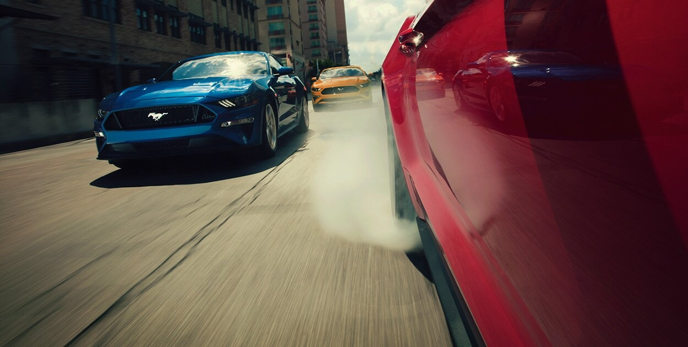
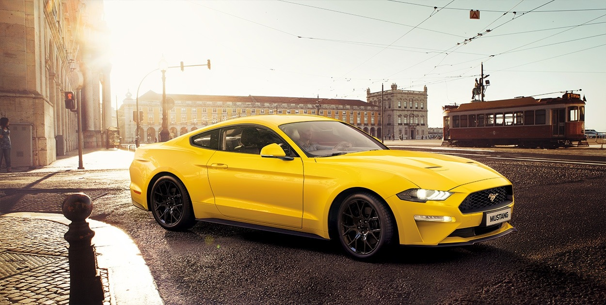
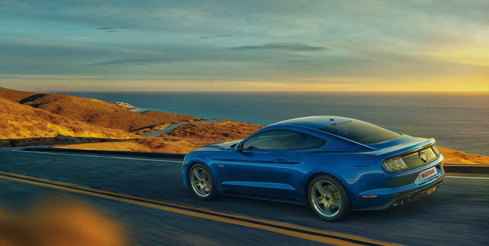

MUSTANG 關於Mustang的名稱來由，一說是來自P-51 Mustang戰鬥機的概念，後來簡化叫做Mustang，這名字又與奔騰的野馬相關聯。另一說是源自美國南衛理工會大學Mustang橄欖球隊，因為它正如這支Mustang球隊一樣輕快、疾速。而不論經典的車名源自何者，Mustang的傳奇將流轉不滅。 保留經典視覺元素，在馳騁中釋放自由精神，讓Mustang 每一次的現身注定無法低調。 